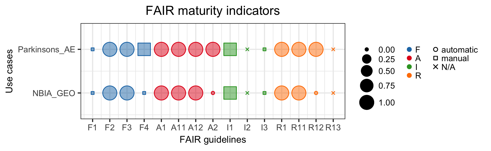

Data reuse is crucial to enhance scientific progress and maximize return on science investments. Given the incremented availability, manual and automatic retrieval of data for new research questions can be challenging. Among the guidelines created to enhance data retrieval, the FAIR (findable, accessible, interoperable, reusable) principles are increasingly adopted at an institutional and funding level. Metrics to assess FAIRness of data repositories are under study and contributions are highly encouraged. In this work, we propose four real use-cases of researchers retrieving data from four different repositories (eNanoMapper, ChEBI, Gene Expression Omnibus, and Array Express) to answer their research questions. For each use case, we harvested data and metadata via application program interface (API) and we calculated FAIR metrics assigning “automatic pass” , “manual pass” and “ not passed” scores. We found […]. To conclude […]
Introduction
Data sharing and data reuse are two complementary aspects of modern research activity [cit]. Researchers share their data for a sense of community, to demonstrate integrity of acquired data, and to enhance quality and reproducibility of research work [cit]. In addition, data sharing is supported by the emerging citation system for datasets [1], scientific journals requirements [3], and funding agencies that want to maximize their return on science investments [5]. At the same time, researchers are eager to reuse available data to integrate information that answer interdisciplinary research questions [4] and to optimize use of fundings [cit]. Although attitudes towards data sharing and reuse are increasingly favorable [12], data discovery and re-use remain difficult in practice [11]. Studies show that 40% of qualitative data sets were never downloaded, and about 25% of data is used just 1-10 times. In addition, data availability decreases 17% per year [10] due to… To happen, data sharing and reuse need appropriate data management, including quality, standardization, ethics, and security [cit]. Data retrieval, the process of identifying and extracting data from a database using a query [2], is one of the main challenges of data reuse.
In 2016, the FORCE 11 group proposed guidelines for data reuse in the life sciences and named them FAIR, an acronym for findable, accessible, interoperable, and reusable [3] (principles fully listed in Table 2). In a short time these guidelines have gained remarkable popularity, and they are currently supported by funding agencies and political entities, such as the European Commission, the National Institutes of Health in the United States, and institutions in Africa and Australia [4]. In addition, many initiatives raised to promote and implement data FAIRness, such as GOFAIR and FAIRsharing. The FAIR principles were specifically conceived as aspirational, and thus they do not specify any technical requirements for implementation, do not represent a standard, and do not imply openness of data [4]. The broad formulation of the FAIR principles created a large spectrum of interpretations and concerns, and raised the need to define data FAIRness evaluators. Some of the authors of the seminal paper proposed a set of FAIR metrics [5], subsequently reformulated as FAIR maturity indicators [6]. At the same time, they invited consortia and communities to suggest and create alternative evaluators. The majority of the proposed tools are manually fillable questionnaires that provide a final score for data FAIRness (Table 1). However, the guidelines stress on the importance of creating “objective, quantitative, machine-interpretable” metrics [5].
Two platforms are currently available: FAIR evaluation services [6] and FAIRshake [7]. The first … while the second… In addition, there are two studies assessing FAIRness in the databases and repositories. Dunning et al. [8] investigated 37 repositories using a qualitative approach including a traffic-light rating system of FAIRness using a Weber et al. [9] automatically analyzed retrieval of more than a million images from five research data repositories and created absolute and relative metrics.
In this paper, we propose a FAIRness evaluator … applied to databases used by toxicology and nanomaterial researchers. We created reproducible pipelines using python in Jupyter notebook
Table 1: Available tools and studies to assess FAIRness. FAIRness evaluators and studies assessing FAIRness of databases and repositories in the literature. Details of the studies are in Table (Table 2).
We evaluated FAIRness for two real use-cases from our department where researchers retrieve information from a repository to answer their research question. Use-case name used throughout the paper, research question, and repository or database investigated are:
Parkinsons_AE: What are the differentially expressed genes between normal subjects and subjects with Parkinson’s diseases in the brain frontal lobe? To answer this question, the researcher looked for a dataset in ArrayExpress, a repository for microarray gene expression data based at the European Bioinformatics Institute (EBI), United Kingdom [10];
NBIA_GEO: What is the function of mutation of WDR45 protein in the brain? In this case, the researcher looked for a dataset to analyze in Gene Expression Onmibus (GEO), a repository containing gene expression and other functional genomics data hosted at the National Center for Biotechnology Information (NCBI), United States [11].
What is data and what is metadata?
The FAIR guidelines recursively use the terminology data, metadata, and (meta)data.
For our computational implementation, we needed precise definitions of these terms. Accordingly to the Merrian-Webster online dictionary, data are “information in digital form that can be transmitted or processed” [12] whereas metadata are “data that provides information about other data” [13]. Following these definitions, we considered the answer to the research question as data, and the extra information provided in the database about data as metadata. In addition, we divided metadata (M) in subcategories according to the requirements of the FAIR guidelines (indicated with their enumeration):
M(F2): Information that allows researchers to find the dataset s/he looks for. It coincides with the keywords used in the search;
M(F3): Data identifier in the repository;
M(I3): Reference to other metadata;
M(R1): Further information about data content, other than the search keywords;
M(R1.1): Data license;
M(R1.2): Data provenance: author name, publication title, and one author’s email address.
Metadata corresponding to guidelines F2 and R1 change with the research question, while the remaining metadata are independent from the research question. We did not define M(1.3) as it requires community consensus. In all cases, we assumed that data and metadata were hosted in the same repository.
Calculating FAIR maturity indicators
Because the FAIR guidelines stress on the importance of data and metadata being “machine-readable”, we collected information about datasets and repositories via application programming interface (API) wherever possible.
We retrieved information from three different sources:
Repositories (ArrayExpress and Gene Expression Omnibus): We programmatically queried each repository using the same keywords that researchers had used in their manual query. From the obtained metadata, we retrieved information to calculate maturity indicators for the principles F2, F3, I1, I3, R1, and R12;
Registry of repository: We queried re3data.org, a registry containing information about more than 2000 data repositories from various disciplines. We used the retrieved information to computed the maturity indicators for the principles F1, A2, and R12;
Searchable resource: We queried Google Dataset Search, an emerging search engine specific for datasets, to quantify the principle F4.
The output of queries consisted of xml structured information, which we vectorized for easier string finding. Details about the computation of each specific maturity indicator are in Table 2 and in the Jupyter notebook (interactive on binder). To each maturity indicator, we assigned value 1 if the criterion was satisfied, 0 in the opposite case. The only exception is the maturity indicator related to F2, which we calculated as the ratio between the number of keywords in the dataset metadata and the total number of keywords used by the researcher in the manual query.
Table 2: FAIR principles and evaluation criteria used by the promoters, a qualitative analysis, a quantitative calculation, and our approach.
In our approach, dataset metadata refers to metadata retrieved from ArrayExpress and Gene Expression Omnibus, whereas registry metadata to metadata retrieved from re3data.
Acronyms: GUID = Globally Unique IDentifier, A = automatic information retrieval, M = manual information retrieval.
F1: (meta)data are assigned a globally unique and persistent identifier
The GUID matches a scheme that is globally unique and persistent in FAIRsharing
Persistent identifier is DOI or similar
Pass
“doi” icon is enabled in www.re3data.org (M)
F2: data are described with rich metadata (defined by R1 below)
Metadata contains “structured” elements (micrograph, JSON) or linked data (JSON-LD, RDFa)
Title, creator, date, contributors, keywords, temporal and spatial coverage
Q geo, Q chrono
Search keywords are in dataset metadata (A)
F3: metadata clearly and explicitly include the identifier of the data it describes
Metadata contains both its own GUID and the data GUID
DOI of data is in metadata
Pass
Dataset metadata contains dataset ID (A)
F4: (meta)data are registered or indexed in a searchable resource
The digital resource can be found using web-based search engines
Dataset title found in google.com or duckduckgo.com
Pass
Dataset title found in Google Dataset Search (A)
A.1 (meta)data are retrievable by their identifier using a standardized communications protocol
N/A
HTTP request returns 200
Q ret
HTTP request returns 200 (A)
A1.1 the protocol is open, free, and universally implementable
The resolution protocol is universally implementable with an open protocol
Accomplished if protocol is HTTP
Q ret
Accomplished if protocol is HTTP (A)
A1.2 the protocol allows for an authentication and authorization procedure, where necessary
The resolution protocol supports authentication and authorization for access to restricted content
Accomplished if protocol is HTTP
Q ret
Accomplished if protocol is HTTP (A)
A2. metadata are accessible, even when the data are no longer available
There is a policy for metadata
Repository has a clear policy statement
N/A
“data availability policy” is completed in registry metadata (A)
I1. (meta)data use a formal, accessible, shared, and broadly applicable language for knowledge representation
If hash-style metadata (e.g. JSON) or Linked Data are found, pass
Metadata is structured (e.g. Dublin Core)
Pass
Dataset metadata is structured (e.g. xml) (M)
I2. (meta)data use vocabularies that follow FAIR principles
(meta)data uses vocabularies that are, themselves, FAIR
N/A
N/A
N/A
I3. (meta)data include qualified references to other (meta)data
Metadata contain links that are not from the same source (domain/host)
Links to publications and terms definitions
N/A
Dataset metadata includes reference to other dataset IDs (A)
R1. meta(data) are richly described with a plurality of accurate and relevant attributes
N/A
Metadata provide information on how to reuse a dataset
Q geo, Q chrono
Dataset metadata contain more information than search keywords (F2) (A)
R1.1. (meta)data are released with a clear and accessible data usage license
Metadata contains a pointer to the data license
Metadata license is present
Q lic
“datalicensename” and “datalicenseulr” are filled in registry metadata (A)
R1.2. (meta)data are associated with detailed provenance
N/A
Documentation on how data was created
N/A
“authors”, “email” and “title” are filled in dataset metadata (A)
R1.3. (meta)data meet domain-relevant community standards
N/A
N/A
N/A
N/A
Visualizing FAIR maturity indicators
To summarize and compare the outputs of our calculation, we created a balloon plots using the R library ggplot2 [14].
In the graph, each row corresponds to a user-case and each column to FAIR maturity indicator. The size of each shape is the value of a specific FAIR maturity indicator for a particular dataset. Squares represent maturity indicators determined manually, circles are for maturity indicators established automatically, and crosses for not computed maturity indicators. Finally, colors represent a group of principles of the acronym: blue for findable, red for accessible, green for interoperable, and orange for reusable. We used grey for non evaluated metrics.
Results
For both use-cases, metadata contain all keywords used in the manual search (F2), dataset unique identifiers (F3), and additional information for data reuse (R1). In addition, they are structured in xml format (I1) and are released with a clear usage license (R11). The protocol (HTTP) used to retrieved all information is standardized (A1), open, free and universally implementable (A11), and allows for authentication where needed (A12). In both cases, dataset metadata are not assigned a persistent identifiers (F1) and do not reference to other metadata (I3). Finally, the dataset of the use-case Parkinson_AE is found in Google Dataset Search (F4) and has detailed provenance (R12), whereas the dataset NBIA_GEO does not. Comparative summary of results is in Figure 1, whereas details of findings are in Table 3.
Figure 1: Comparative summary of FAIR maturity indicators for the two use cases evaluated in this work. Shape size corresponds to the numerical value of mutual indicators, colors represent FAIR categories, and shapes illustrate the way we retrieved information (N/A = not available). The graph can be fully reproduced from our Jupyter notebook on GitHub and interactively in binder.
Table 3: Comparison of API systems and FAIR maturity indicators for the two uses cases analyzed in this work. For each maturity indicator, we indicate the outcome in natural language and in numbers (1 for pass and 0 for fail).
Authors: Garcia-Esparcia P, Schlüter A, Carmona M, Moreno J, Snsoleaga B, Torrejón-Escribano B, Gustincich S, Pujol A, Ferrer I Email: aschluter@idibell.org Title: Functional genomics reveals dysregulation of cortical olfactory receptors in parkinson disease: novel putative chemoreceptors in the human brain (1)
No (0)
R1.3 (Community standards)
Not evaluated (None)
Not evaluated (None)
Discussion
Still work in progress
In this work, we present a workflow to compute FAIR maturity indicators for two use-cases of dataset retrieval in the life sciences.
How we calculated the metrics
Comparison to Wilkinson: Our metrics do not start with metadata GUID (general user identifier) (see gen2) but with the researcher’s question. Using GUID implies that the researcher has already found the dataset of interest
Compare to Weber and Dunning
We used re3data and not FAIRsharing because the last one does not provide API
Limitations: A1, A11, A12: retrieve information only via HTTP, so they are all true. If data is on a local excel file or database, then we need a different implementation
Limitation of manual :We searched manually as Google Dataset Search does not have an API.
NO final score because
Comments on the findings
Visualization - We chose to plot our results instead of providing a final score to avoid negative connotations (see FAIR metrics vs. maturity indicators). However, we wanted to be able to compare our results, so we used balloon plots, usually used for categorical data visualization and comparison. (FAIR shake uses visualizations too but they are not comparable)
Reproducibility - We chose to use Jupyter notebooks for reproducibility of our results. However, databases change but they do not provide versions. Therefore, we can just declare the time stamps when our query was done. In addition, Jupyter notebooks are both machine and human readable, and easier to export to other domains that do not use specifically programming languages designed for the web
Difficulty / Limitations Different repositories use different data structure. Automatization occurs after a lot of manual investigation - We had to adapt the code based on API type and response schema. Our implementation requires specific knowledge of the database structure and thus it is difficult to directly generalize it to various databases
- We considered use cases where all queries provided one final dataset. In real practice, researchers often need to compare subset of retrieved datasets manually because there are not enough information to discriminate them computationally (the information is present, but not machine-readable)
Our implementation requires specific knowledge of the database structure and thus it is difficult to directly generalize it to various databases.
Different repositories use different html tags to define their - Database APIs do not allow to retrieve all the information that the user interface allows (example 1: ChEBI does not allow to retrieve information about reactions; example 2: Array Express has some metadata in tables that must be downloaded locally before being queried
Acknowledgments
The NanoSolveIT project is funded by the European Union grant xxx. The RiskGONE project is funded by the European Union grant 814425 — RiskGONE — H2020-NMBP-TO-IND-2018-2020 NMBP-13-2018 RIA. We would like to thank Nasim B. Sangani, Gwen Keulen, and Friederike Ehrhart for the use cases, and Tobias Weber for the insightful discussion about data retrieval. This manuscript was created with manubot [15].
3. The FAIR Guiding Principles for scientific data management and stewardship
Mark D. Wilkinson, Michel Dumontier, IJsbrand Jan Aalbersberg, Gabrielle Appleton, Myles Axton, Arie Baak, Niklas Blomberg, Jan-Willem Boiten, Luiz Bonino da Silva Santos, Philip E. Bourne, … Barend Mons Scientific Data (2016-03-15) https://doi.org/bdd4
DOI: 10.1038/sdata.2016.18 · PMID: 26978244 · PMCID: PMC4792175
4. Cloudy, increasingly FAIR; revisiting the FAIR Data guiding principles for the European Open Science Cloud
Barend Mons, Cameron Neylon, Jan Velterop, Michel Dumontier, Luiz Olavo Bonino da Silva Santos, Mark D. Wilkinson Information Services & Use (2017-03-07) https://doi.org/gfkrrv
DOI: 10.3233/isu-170824
5. A design framework and exemplar metrics for FAIRness
Mark D. Wilkinson, Susanna-Assunta Sansone, Erik Schultes, Peter Doorn, Luiz Olavo Bonino da Silva Santos, Michel Dumontier Scientific Data (2018-06-26) https://doi.org/gfkrrt
DOI: 10.1038/sdata.2018.118 · PMID: 29944145 · PMCID: PMC6018520
6. Evaluating FAIR Maturity Through a Scalable, Automated, Community-Governed Framework
Mark D Wilkinson, Michel Dumontier, Susanna-Assunta Sansone, Luiz Olavo Bonino da Silva Santos, Mario Prieto, Dominique Batista, Peter McQuilton, Tobias Kuhn, Philippe Rocca-Serra, Mercè Crosas, Erik Schultes Cold Spring Harbor Laboratory (2019-05-28) https://doi.org/gf492b
DOI: 10.1101/649202
7. FAIRshake: toolkit to evaluate the findability, accessibility, interoperability, and reusability of research digital resources
Daniel J. B. Clarke, Lily Wang, Alex Jones, Megan L. Wojciechowicz, Denis Torre, Kathleen M. Jagodnik, Sherry L. Jenkins, Peter McQuilton, Zachary Flamholz, Moshe C. Silverstein, … Avi Ma’ayan Cold Spring Harbor Laboratory (2019-06-03) https://doi.org/gf4cm8
DOI: 10.1101/657676
8. Are the FAIR Data Principles fair?
Alastair Dunning, Madeleine De Smaele, Jasmin Böhmer International Journal of Digital Curation (1970-01-01) https://doi.org/gf4bnb
DOI: 10.2218/ijdc.v12i2.567
9. How FAIR Can you Get? Image Retrieval as a Use Case to Calculate FAIR Metrics
Tobias Weber, Dieter Kranzlmuller 2018 IEEE 14th International Conference on e-Science (e-Science) (2018-10) https://doi.org/gf4bm9
DOI: 10.1109/escience.2018.00027
 0000-0003-4264-1773 ·
0000-0003-4264-1773 ·  sbonaretti ·
sbonaretti ·  SerenaBonaretti
SerenaBonaretti